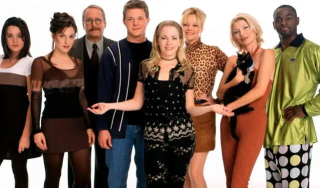

Resumen
"Sabrina, la bruja adolescente" es una serie de televisión estadounidense que se emitió originalmente
desde 1996 hasta 2003. La serie fue desarrollada por Nell Scovell y está basada en el cómic del mismo
nombre de Archie Comics.
La trama gira en torno a Sabrina Spellman, una adolescente mitad bruja y mitad mortal que vive con sus
tías brujas, Hilda y Zelda Spellman, en la ciudad ficticia de Greendale. A lo largo de la serie, Sabrina
debe equilibrar su vida como estudiante de secundaria con sus habilidades mágicas y su responsabilidad
como bruja. También hay muchas subtramas, incluyendo el romance de Sabrina con su novio mortal, Harvey
Kinkle, y su rivalidad con la popular chica de la escuela, Libby Chessler.
Personajes
En esta serie hay varios personajes principales pero en esta sección hay lista de algunos de ellos:

-
Sabrina Spellman:
- Protagonista de la serie, es mitad bruja y mitad mortal.
-
Tía Hilda Spellman:
- Una de las tías brujas de Sabrina, es más excéntrica y despreocupada que su hermana Zelda.
-
Tía Zelda Spellman:
- La otra tía bruja de Sabrina, es más seria y racional que su hermana Hilda.
-
Salem Saberhagen:
- El gato parlante de Sabrina, fue un mago que fue castigado por el Consejo de Brujas y transformado en un gato.
-
Harvey Kinkle:
- El novio mortal de Sabrina y su amor de la escuela secundaria.
-
Libby Chessler:
- La popular y malvada compañera de clase de Sabrina, que a menudo hace todo lo posible para humillarla.
-
Valerie Birkhead
- La mejor amiga de Sabrina en la escuela secundaria, que apareció en las últimas tres temporadas de la serie.
-
Estos son solo algunos de los personajes principales de la serie. Hay muchos otros personajes recurrentes y personajes
secundarios que aparecen a lo largo de las siete temporadas